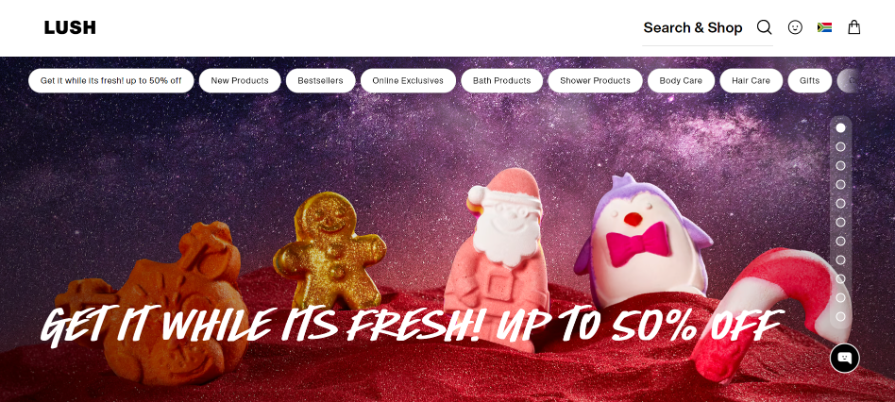
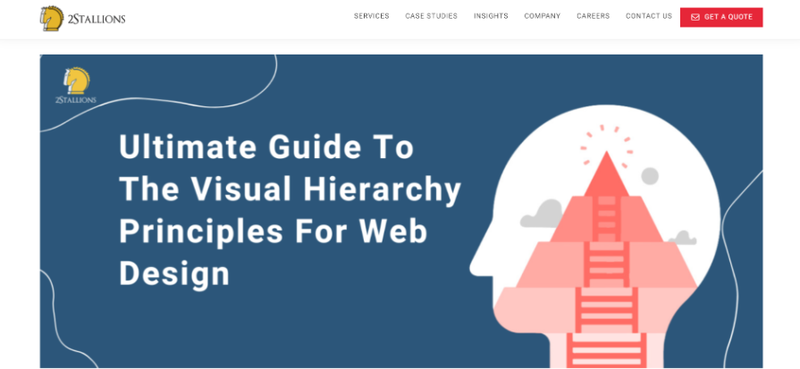

Contrast
Lush Bath Products
First we have the background sky in the image with different colors and tecture to represent a starry sky. Then we have the colourful dolls which also looks like candy. Bright colors cause peoople to be drawn into the picture snd then eventually learning aout the product/s.
Rule of Thirds
Staak Risk Solutions

The first thing we see on the left of the image is the tree which immidiately makes you think of growth or sustainance. The tree then directs the viewer to the right of the image where we have the words or brief description of what the company does. If you look at the rule of thirds grid you will see that the tree is on the side of the image and is situated on the lines crossing each other taking partial spaces of squares around the tree.
Visual Hierarchy
Ultimate guid to the Visual Heirarchy
Here the 'Get a quote' button is in red, brighter than most of the objects around it. This draws people to the button which then makes them curious about what the website is about.